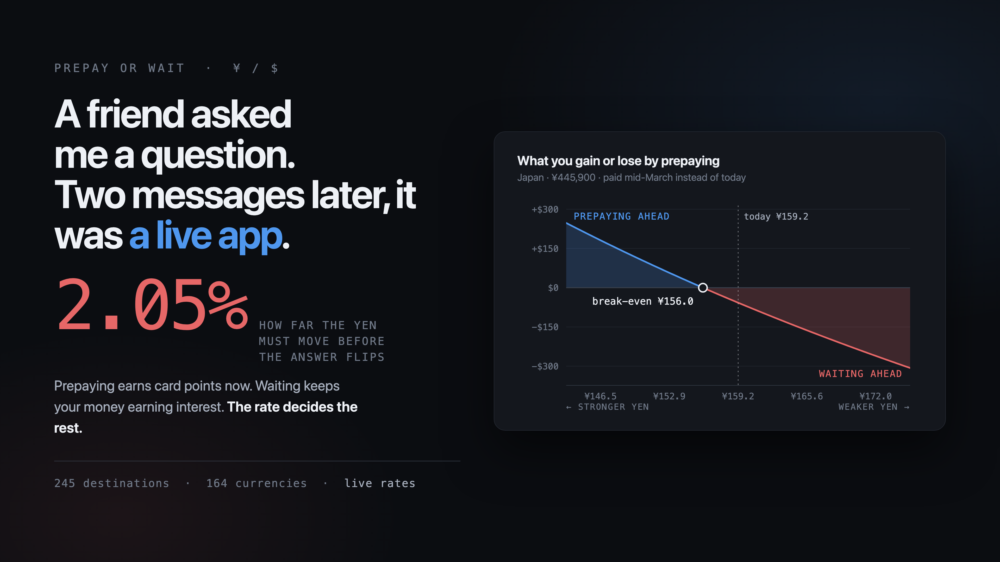

A friend messaged me last week with a travel problem. They're going to Japan in March, the exchange rate is unusually favorable right now, and the hotel is offering a choice: prepay on the credit card today, or pay on arrival.
Prepaying earns card points immediately and locks in today's rate. Waiting keeps the money earning interest for seven more months. And in between sits the thing neither option controls — the yen could move either way.
They'd already worked out the crux: the rate would have to move more than about 2.5% before prepaying became the wrong call.
Then came the line that turned a chat message into a product:
"It would be better if I could just go on an app, put in a couple things, and it would determine everything for me."
So I handed the message to Claude Code and watched.
The first thing it did was not write code. It derived the formula behind that 2.5% and checked whether the number held up.
It did. Put both options in the same units — dollars as of the day you'd otherwise pay — and the break-even rate falls out:
R* = R₀ × (1 + fee_late)(1 − rew_late) ÷ [(1 + fee_pre)(1 − rew_pre) × (1 + r)^t]
When card rewards are the same on both sides and there are no foreign transaction fees, everything cancels except the interest term. Over the 212 days to mid-March, at the rates in effect that day, it came to 2.5%. Exactly what they'd reasoned to without writing anything down.
That mattered more than it sounds. I wasn't asking a machine to solve a problem nobody understood. I was asking it to formalize a problem a smart non-expert had already half solved. Those are very different tasks, and the second one goes fast.
The follow-up read like a compliment:
"I think people would find this useful because they're not knowledgeable enough to know what variables to think about when prepaying versus not... Very cool analysis. A little complicated for most people. But I think a lot of people don't even think about these types of things."
Read it again. That is a product brief.
"A little complicated" killed the ten-field form and buried everything behind a disclosure. What's left on the surface is four questions: where are you going, how much are they asking, when would you otherwise pay, and what does your cash earn.
"They don't know what variables to think about" put three cards above the questions, naming the trade-off before asking anything. Prepaying gives you card points today. Prepaying costs you interest on your own money. Either way, the rate moves.
"Do all countries" turned one hardcoded currency into 245 destinations and 164 currencies, with live exchange rates fetched on every page load.
That wasn't a feature request. It was a description of who the user is and what they don't know — the part I couldn't have gotten from reading the code.
I also asked it to look up interest rates automatically. It declined, explained why, and I think it was right.
There's no free public feed for savings rates. There is one for central bank policy rates — but a policy rate isn't what your savings account pays. Your bank might pay 4%, or it might pay 0.01%. Automating that would have produced a number that looked authoritative and was quietly wrong for most people.
What shipped instead: a labeled starting value sitting right alongside the other questions, with a nudge — if your cash is in checking earning nothing, enter zero. That erases the interest term entirely and the decision comes down to points alone. Identical rewards on both sides make it a dead tie, and the app says so rather than manufacturing a winner.
An assistant that had just done what it was told would have built the worse thing.
The unglamorous half was verification. Rendering the page in a headless browser across screen widths and both color themes caught six bugs before anyone saw it — including one that only appears if your home currency is the Japanese yen, where exchange rates below 1.0 collapsed to four decimal places and printed the current rate and the break-even rate as the same number.
Nobody would have filed that bug. They'd have quietly stopped trusting the tool.
And when we refreshed the interest rate table, the old numbers had drifted badly — the US figure was carrying 4.50% against an actual 3.63%. Correcting it moved the break-even by half a percentage point. That original 2.5% was right for the environment it was derived in. Rates have come down since.
The last bug was found by writing this article. I'd drafted the paragraph above about entering zero, went to check it against the running app, and discovered two things: the interest field was buried at the bottom of a collapsed panel, and entering zero produced an exact tie that the app reported as "Wait and pay later — $0.00 better off." Describing software honestly turns out to be a decent test of it. The field moved up, and ties now say they're ties.
I want to be precise about "two prompts," because the true version is the better one.
There were more than two messages. But everything after the first two was me typing "go" and "commit it," plus a few small operational asks — open the detail panel by default, add a weekly job to refresh the rates. Every decision that shaped what this is came from two messages written by someone who wasn't trying to specify software. They were explaining a problem clearly, then saying honestly that the first version was too complicated.
The scarce skill was never prompting. It was that a friend noticed a real decision most people make badly, thought about it carefully enough to land within a rounding error of the right answer, and then said the most useful sentence in the exchange: a little complicated for most people.
Try it: jimzucker.github.io/exchange-rates
Source: github.com/jimzucker/exchange-rates
It's a calculator, not financial advice. And it's honest about what it can't price — refundability, chargeback timing, and prepaid-rate discounts routinely matter more than the arithmetic does. A hotel shaving 10% off for prepaying swamps a 2% interest cushion entirely.
Which is the other thing a good question does. It tells you where the math stops.